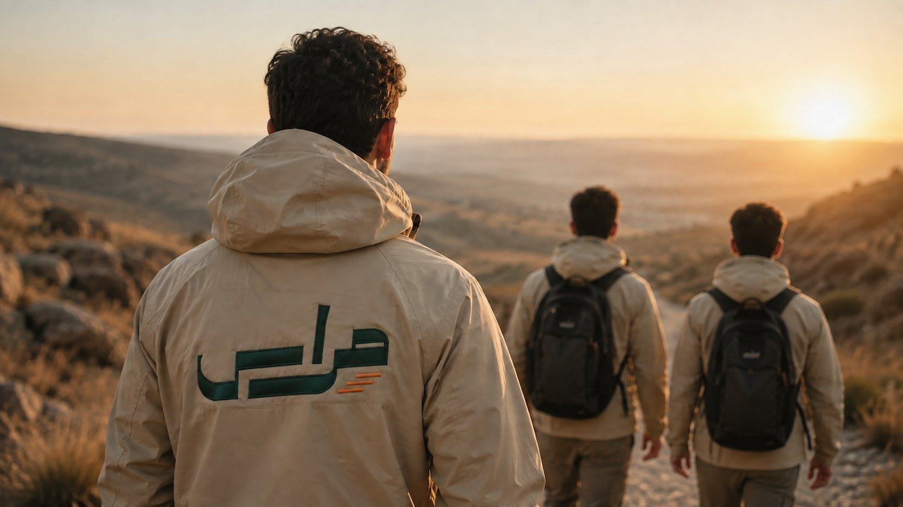
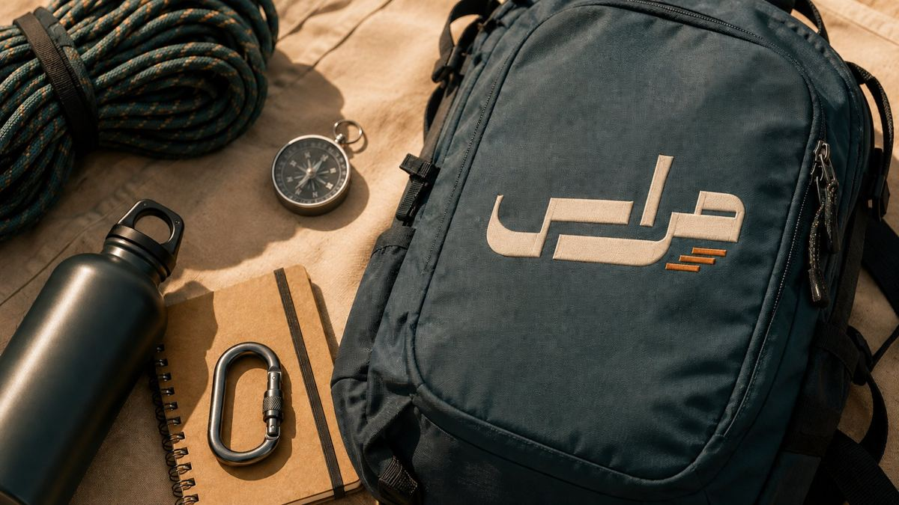

مؤسسة شبابية تربوية وتدريبية · سوريا
مؤسسة مراس
لبناء القوة والقيادة الشبابية
نُعنى بالبناء المتكامل لشخصية الشاب السوري: قدراته البدنية والنفسية والفكرية والقيادية، ضمن بيئة آمنة ومنظمة تجمع بين التدريب والمغامرة الكشفية والانضباط والعمل الجماعي والخدمة المجتمعية.
من التجربة إلى القوة.. ومن القوة إلى القدوة

01 | من نحن
من نحن
مؤسسة مجتمعية تربوية وتدريبية شبابية في سوريا
مؤسسة مراس تُعنى بالبناء المتكامل لشخصية الشاب السوري، وتعزز قدراته البدنية والنفسية والفكرية والقيادية، ضمن بيئة آمنة ومنظمة تجمع بين التدريب والمغامرة الكشفية والانضباط والعمل الجماعي والخدمة المجتمعية.
نحوّل الطاقة إلى قوة نافعة
والحماس إلى مبادرة فاعلة، والمهارة إلى مسؤولية وقيادة، ونربط القوة بالأخلاق لا بالفوضى والاندفاع.
- رؤيتنا
- مؤسسة وطنية رائدة في بناء الشباب السوري القوي، المغامر، الواثق والمنضبط، الخادم لمجتمعه والمستعد لتحمّل المسؤولية.
- رسالتنا: مغامرة وارتقاء
- برامج شبابية نوعية فيها المغامرة والتحدي العملي، تكتشف القدرات، وتبني شخصيات تعتز بهويتها وقيمها، ضمن بيئة آمنة ومحفزة.
مرتكزاتنا الخمسة
- القوةالبدنية والفكرية والنفسية
- الانضباطالتزام ذاتي واحترام للنظم والوقت
- المبادرةمن التلقي إلى الفعل وصناعة الحلول
- الانتماءاعتزاز بالهوية وارتباط بقضايا المجتمع
- المسؤوليةتحمّل نتائج الاختيارات والواجبات
02 | كيف نبني الشباب
سلّم الارتقاء
العضوية رحلة نمو لا بطاقة انتساب
- 4 مستويات
- 9 رتب
- سنة لكل رتبة
- 27 مخيمًا
- 16–25 عامًا
-
واعد
16–18 عامًاواعد
يتعلم أساسيات التخييم والبقاء، ويعتمد على نفسه في احتياجاته، ويخدم إخوانه.
-
المغامر
16–18 عامًامغامر · مغامر أول · مغامر متقدم
غرس القيم الأساسية، وتنمية الانضباط، وبناء مهارات التخييم الأولية.
-
الفارس
18–22 عامًافارس · فارس أول · فارس متقدم
بناء الشخصية، وتعميق المهارات، وتنمية المبادرة والعمل الجماعي، والتأثير في الأقران والأقارب.
-
القدوة
22–25 عامًارائد · قدوة
قيادة الفرق وتنظيم الأنشطة والمبادرات، والتوجيه للتأثير بالقدوة والعمل.
إيقاع البرنامج
- أسبوعيًالقاء المجموعة
لقاء حضوري ومحاضرة نظرية.
- شهريًامهمة مجتمعية
نشاط خدمي أو تطوعي.
- كل ثلاثة أشهرمخيم شامل
اختبار عملي، وحفل ترقية رمزي للمستحقين.
- سنويًاملتقى عام
تكريم المتفوقين، وإعلان قصص النجاح، ومراجعة الأنشطة والمعايير.
أنواع العضوية
- العضوية الثابتة
- رتبة ثابتة تُحدد بناءً على اجتياز مرحلة محددة من مراحل مؤسسة مراس.
- العضوية العامة
- يكتسبها مشارك في أحد المخيمات أو الفعاليات الترفيهية أو البرامج الرديفة.
- عضوية الصداقة
- تُمنح شرفيًا لشخصيات معتبرة قدّمت خدمة في أحد برامج مؤسسة مراس.
رتب القادة
- قائد فريق10 أشخاص فما دون
- قائد وحدة4–5 فرق
- قائد تجمع3–4 وحدات
- قائد ركن4–5 تجمعات
03 | خطة البرنامج
27 مخيمًا في تسع رتب
كل رتبة مدتها سنة، وفي كل مخيم مهارات ميدانية وقيم وفكر
رتبة واعد 16–18 عامًا
- 1
الجيل الواعد
التعرف على أهمية الحياة الكشفية · تحقيق الانضباط والاستجابة السريعة · تعلم مسميات بعض العقد والنيران والشيفرات واستعمالاتها · رماية قوس · مهمة جماعية
- قيم
- المسؤولية · السمع والطاعة
- فكر
- مسؤولية الشباب تجاه المجتمع
- 2
أشبال الميدان
مراجعة تشكيل المجموعات ودلالات الصافرات · تعلم 3 عقد · تعلم 4 من ألعاب التركيز والعمل الجماعي · وضعيات الرماية بالبندقية · رماية ببندقية الضغط · مسير تخريج مسافة 10 كم
- قيم
- التعاون · التركيز
- فكر
- أثر المخيمات في بناء القيم وتوجيه السلوك
- 3
التحدي
كيفية تحديد الاتجاهات · أساسيات الأمن والسلامة في العمل الجماعي · تعلم إحدى الشيفرات · بعض الإشارات الإرشادية · مهمة الكنز المفقود
- قيم
- المبادرة · حفظ النفس
- فكر
- المبادرة في حياة النبي صلى الله عليه وسلم
رتبة مغامر 16–18 عامًا
- 4
مخيم البقاء الأول
إعداد الطعام في الطبيعة · تنقية المياه · تعلم عقدتين · إعداد بدني وخشونة · تكيف مع المكان · مهمة نصب خيمة
- قيم
- الاعتماد على النفس
- فكر
- الجمع بين التوكل والأخذ بالأسباب
- 5
مخيم المغامرة والتحدي
التعرف على أنواع الجبال · إتقان التسلق والتعلق بأمان · صعود جبل لمسافة 5 كم
- قيم
- الشجاعة · التفكر
- فكر
- مفهوم الشجاعة وعلاقته بالمسؤولية تجاه الأمة
- 6
مخيم الكنز
القراءة بالخريطة والبوصلة وتحديد الإحداثيات · مهام ميدانية · بعض الإشارات الإرشادية · إيجاد الكنز
- قيم
- الأمانة
- فكر
- مصادر المعرفة وأثرها في تكوين القناعات
رتبة مغامر أول
- 7
مخيم الأمن الشخصي
قواعد الأمن ضمن العمل · أبرز صور الاختراق · تعلم نوعين من الشيفرات · مهام الحراسة وأهميتها · تحدي الحفاظ على كلمة السر
- قيم
- اليقظة · الوعي
- فكر
- الوعي بأساليب الاستدراج والاستغلال
- 8
مخيم الرماية الأول
إصابة الهدف بالسهم ووسائل أخرى · أساسيات السلامة والأمان أثناء الرمي · تحدي مضمار بينت بول
- قيم
- الانضباط · القوة
- فكر
- مفهوم القوة في الإسلام وضوابط استخدامها
- 9
مخيم الحواجز
اجتياز الحواجز والقفز والزحف بثبات · استعراض تحديات ميدانية
- قيم
- المثابرة · التحمل
- فكر
- معنى الابتلاء وأثر الإيمان في مواجهة الشدائد
رتبة مغامر متقدم
- 10
مخيم البقاء المتقدم
إعداد الطعام من الطبيعة · تعلم عقدتين · مهمة بناء مأوى من الطبيعة · أعمال ريادية
- قيم
- القناعة · الإبداع
- فكر
- ثقافة الاستهلاك وأثرها في الفرد والمجتمع · نماذج لأمم نهضت بعد الشدائد
- 11
مخيم المغامرات الرقمية
طرق التواصل اللاسلكي · توظيف الذكاء الصنعي · مبدأ الخوارزميات · آلية التحقق من المعلومات · مهمة إنشاء منتج رقمي داعم لمجالات مؤسسة مراس
- قيم
- الصدق · التجرد
- فكر
- دور الإعلام الرقمي في صناعة الوعي وتزييفه
- 12
مخيم المغامرة المتقدم
مراجعة المهارات الكشفية · بناء بدني تخصصي · استعراض نظام منضم وحركات قتال قريب · مسير 15 كم
- قيم
- علو الهمة
- فكر
- مفهوم العبادة الشامل وعلاقته ببناء الإنسان
رتبة فارس 18–22 عامًا
- 13
مخيم قيادة المسيّرات
أنواع المسيّرات وأجزاؤها واستخداماتها · تشغيلها بأمان وقيادتها · طرق الحماية منها · مهمة كنز باستخدام المسيّرات
- قيم
- الإتقان
- فكر
- دور التقنية في خدمة المجتمع وحدود استخدامها
- 14
مخيم الرصد والاستطلاع
تطبيق المهارتين الرقمية والمسيّرات معًا في تحدٍّ ميداني طيلة أيام المخيم
- قيم
- طلب العلم
- فكر
- توظيف العلم النافع في خدمة الإنسان
- 15
الرامي المحترف
أصول الرماية ووضعياتها · أساسيات القنص · تكتيكات الرماية · محاكاة رماية مع جهد
- قيم
- ضبط النفس · الحلم والأناة
- فكر
- إسقاطات من حياة النبي صلى الله عليه وسلم في العلاقات مع المخالفين
رتبة فارس أول
- 16
مخيم الاستجابة والطوارئ
أساسيات الإسعافات الأولية · الاستجابة للحوادث والتعامل معها · الاستجابة الأولية للكوارث · محاكاة إنقاذ (غرق · جروح · انتشال)
- قيم
- الرحمة · المعرفة
- فكر
- كرامة الإنسان وحرمة حياته وواجب إغاثته؛ فالعاطفة وحدها لا تكفي لمساعدة الآخرين
- 17
مخيم الخدمة والمواطنة
تصميم البرامج والمبادرات المجتمعية · دراسة جدوى المبادرات · حملة تشجير وتنظيف ممتدة خارج المخيم
- قيم
- الانتماء · الخدمة
- فكر
- المواطنة الصالحة وحماية المصلحة العامة
- 18
مسار البقاء الأخير
مهمة حقيقية لمسير ضمن موقع طبيعي يستغرق يومين، مع مبيت في الطبيعة وباستخدام وسائل أولية
- قيم
- الصبر · الجدية
- فكر
- الإيمان بالقدر وعلاقته بالسعي والاختيار
رتبة فارس متقدم
- 19
مخيم التمويه والتخفي
التخفي والاندماج مع الطبيعة · التسلل والتمويه · مراجعة المهارات الكشفية المتعلقة · مسير 20 كم
- قيم
- الحذر · التصميم
- فكر
- فوائد وعبر من رحلة الهجرة النبوية
- 20
مخيم الأمن المتقدم
أساسيات الأمن السيبراني · طرائق التفكير الأمني · تحديات أمنية ميدانية (محاكاة تمشيط مبنى)
- قيم
- احترام الخصوصية
- فكر
- التوازن بين أمن المجتمع وحقوق أفراده
- 21
الفروسية
ركوب الخيل · العدو والثبات · قفز حواجز بسيطة · مهمة استعراض
- قيم
- المروءة · الشكيمة
- فكر
- الفروسية وأثرها في منظومة الأخلاق العربية والإسلامية
رتبة رائد 22–25 عامًا
- 22
مخيم الريادة المجتمعية
فهم المجتمع كشخصية اعتبارية وتصنيف أصناف الجمهور · دراسة لأبرز المشكلات المجتمعية تُتابَع حلولها في المبادرات الشهرية
- قيم
- التكافل
- فكر
- دور المبادرات والمؤسسات في معالجة مشكلات المجتمع
- 23
مخيم الجماهير
سيكولوجيا الجماهير وطريقة هندستها · دراسة خطاب إصلاحي مجتمعي من خلال الواقع ومواقع التواصل
- قيم
- الاهتمام لأمر الغير
- فكر
- صناعة الرأي العام وأثر الخطاب في توجيه الجماهير
- 24
مخيم القيادة والتخطيط
فنون القيادة وهندسة البرامج · التخطيط الاستراتيجي · مهام قيادية مع منتسبي مؤسسة مراس المستجدين
- قيم
- العدل
- فكر
- الشورى والمساءلة وأثرهما في صلاح القيادة
رتبة قدوة
- 25
مخيم التحدي الشامل
مهمة حقيقية لمسير ضمن موقع طبيعي يستغرق 4 أيام، مع مبيت في الطبيعة وباستخدام وسائل أولية
- قيم
- الإيثار
- فكر
- سنن التغيير وعلاقة صلاح النية بصحة العمل
- 26
مخيم القدوات
أهمية القدوة الصالحة في المجتمع · مواجهة خطر القدوات المزيفة · ورشة مبادرات مجتمعية ترسخ قيمة القدوة الحسنة وتُتابَع بعد المخيم
- قيم
- الإخلاص · الصدق
- فكر
- معايير القدوة وأثر الشهرة في تشكيل الوعي
- 27
مخيم التخريج
توصيات وخلاصة مراحل مؤسسة مراس وأهدافها · ترفيه وتآخٍ · عرض فكرة مشروع التخرج وضوابطه ومساره الزمني، ويُتابَع بعد المخيم. وتحمل الدفعة الأولى اسمًا اعتباريًا
- قيم
- الوفاء
- فكر
- دور الشباب في بناء سوريا واستدامة العمل المجتمعي
شروط الانتقال إلى مستوى أعلى
- المشاركة في كافة مخيمات المرحلة.
- حضور 60% من المبادرات واللقاءات.
- خلو سجل العضو من أي مخالفات أو عقوبات جسيمة.
- اجتياز التقييم النهائي.
كيف يُقيَّم العضو
- الميداني والكشفي
- اجتياز وتطبيق المهارات الكشفية والميدانية المقررة في المرحلة.
- النظري
- فهم قيم المستوى ومفاهيمه وتطبيقها، عبر الاختبارات والورش العملية.
- السلوكي
- الانضباط والأمانة والاحترام والمسؤولية والمبادرة وتقبّل التوجيه، بالملاحظة المتكررة.
القرار في نهاية المستوى: انتقال، أو انتقال مشروط بخطة دعم، أو استكمال، أو تمديد، أو مسار أنسب، أو خروج منظم. ولا ينفرد المربي بالقرار، وللعضو طلب مراجعة خلال 7 أيام عمل يُبتّ فيه خلال 10 أيام عمل.
04 | المسارات والبرامج التدريبية
سبعة مسارات مستقلة
وثلاثة مسارات تندرج ضمنها وتُدمج في جميع المخيمات
- مسار البقاءماء · نار · مأوى · طعام · عمل جماعي · وعي الزمان والمكان · تحدٍّ ميداني
- مسار الكنزخرائط · بوصلة · إحداثيات · مهام ميدانية
- مسار المغامرةتسلق · حواجز · قفز · زحف · تعلّق
- المسار التقنيمغامرات رقمية · قيادة مسيّرات
- مسار الخدمةتشجير · نظافة · توعية · تراث · حراسة
- مسار القدوةفهم المجتمع كشخصية اعتبارية · سيكولوجيا الجماهير · أصناف الجمهور · أدوات التأثير
- مسار الرمايةالسهم · الرمح · فعاليات البنتبول
05 | برامجنا
برامجنا الرديفة
برامج تعمل إلى جانب الرحلة الأساسية

المدارس
تدريب مشرفي الطلاب، ومخيمات مدرسية بالتعاون مع وزارة التربية.
العودة إلى التعلّم
للمنقطعين عن التعليم من 12 إلى 18 عامًا: تهيئة، وتأهيل مهاري، وإرشاد أسري.
البرامج الجامعية
التهيئة للجامعة، والتعلّم الذاتي، والمبادرات، والتهيئة لسوق العمل.
القيم والتاريخ
غرس القيم والعادات الإيجابية، ومخيمات تاريخية وثقافية.
06 | الحقوق والواجبات والامتيازات
علاقة واضحة بين العضو والمؤسسة
أبرز الحقوق
- المعاملة باحترام وعدالة، وصون الكرامة والخصوصية
- بيئة آمنة خالية من الإساءة والاستغلال
- معلومات واضحة عن البرنامج ومخاطره
- التوجيه والتغذية الراجعة وفرص التطور
- الشكوى والتظلم دون انتقام
- الانسحاب من نشاط عند خطر حقيقي
أبرز الواجبات
- الالتزام برسالة مؤسسة مراس وقيمها وتعليماتها
- حضور سنوي لا يقل عن 75% من الالتزامات
- احترام الآخرين ومنع التنمر والإقصاء
- الإبلاغ الفوري عن المخاطر والحوادث
- حماية المعلومات والصور وعدم نشرها دون إذن
- عدم تمثيل المؤسسة أو التصريح باسمها دون تكليف
امتيازات الأعضاء المتميزين
- شهادات تميّز وأوسمة وشهادة مشاركة معتمدة
- منح تدريبية ودعم دراسي أو مهني
- المشاركة في أنشطة وطنية تنظمها مديرية الأنشطة
- الإدراج في قاعدة بيانات الكوادر الشابة المتميزة
- أولوية ترشيحية في التوظيف داخل مؤسسات الدولة
- خدمات وخصومات بالتنسيق مع الجهات المختصة
07 | الاستقطاب والقبول
كيف تنضم إلى مراس
لا يتجاوز القبول قدرة المؤسسة على المتابعة والتربية والسلامة
| الشرط | معيار القبول | كيف نتحقق منه |
|---|---|---|
| العمر | من 16 إلى 17 سنة، مطابقة للعمر الإرشادي المحدد | وثيقة الهوية الرسمية (بطاقة أو جواز) |
| التفرغ والالتزام | تفرغ تام للإقامة، والالتزام بالبرنامج المقرر | إقرار خطي بالاستمارة مع تأكيد بالمقابلة |
| الملاءمة الصحية | القدرة على الأنشطة الميدانية وخلو الموانع الحرجة | تقرير طبي من مشفى معتمد من وزارة الصحة |
| الموافقات | موافقة ولي الأمر لمن دون 18 عامًا، وموافقة على استخدام الصور والبيانات | توقيع خطي على النموذج المعتمد |
| اجتياز المرحلة السابقة | الاجتياز النهائي للمرحلة السابقة بنجاح | بيانات المشترك في وحدة العضوية |
خطوات القبول
- إعلان
- طلب وتحقق
- فرز أولي
- مقابلة أو نشاط تعريفي
- مراجعة صحية وموافقات
- قرار: قبول، انتظار، برنامج أنسب، اعتذار
- تهيئة وفترة تجربة ثم تثبيت
لجنة القبول: مسؤول العضوية، وعضو من التربية، وممثل البرنامج المستفيد. ولا ينفرد شخص واحد بالفرز والمقابلة والقرار.
العضوية رحلة نمو
لا بطاقة انتساب
التسجيل في المخيم القادم مفتوح الآن. ولأي استفسار، راسلنا على واتساب أو البريد.